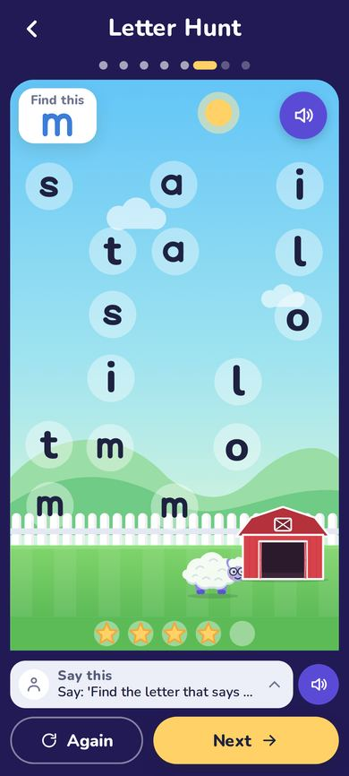

Founding Families: 63 of 100 seats left
Hear your child read their first word this week.
Ten minutes a day with a train that only moves when your child reads the next sound. You sit beside them, and the app tells you exactly what to say.
🚂 Start the first 5 lessons freeNo card. Works on any phone.


